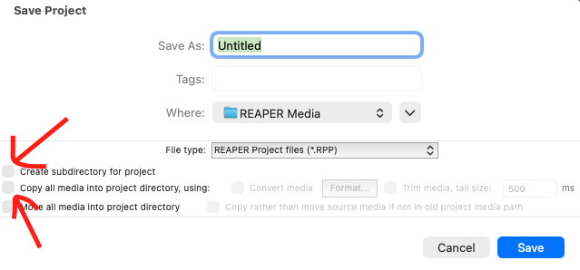
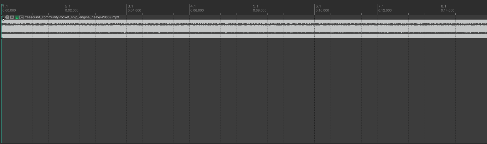
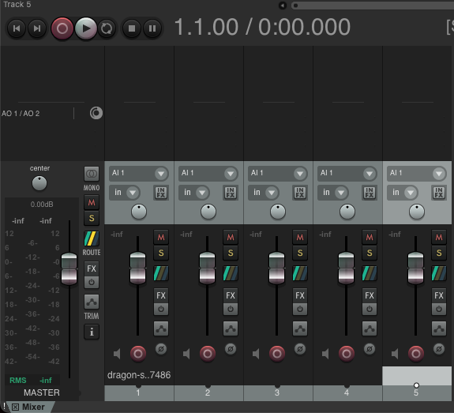

REAPER¶
 Source: reaper.fm
Source: reaper.fm
1. Gestion de projet dans Reaper¶
La gestion de projet est la base de tout travail dans Reaper. Un projet contient toutes les informations de votre session : pistes, audio, effets, automatisations, tempo et structure.
Créer un projet¶
Lorsque Reaper s’ouvre, un projet vide est généralement déjà créé.
➤ Nouveau projet¶
- Menu :
File > New Project - Raccourci :
- Windows :
Ctrl + N - Mac :
Cmd + N
- Windows :
➡️ Permet de repartir d’une session vide.
Enregistrer un projet¶
Il est essentiel de sauvegarder dès le début.
➤ Sauvegarde initiale¶
- Menu :
File > Save Project As - Choisir un dossier
- Donner un nom clair au projet
Exemple de nom :¶
- Projet_Sonore_01
Options importantes à l’enregistrement¶

Create subdirectory for project¶
✔ Recommandé
Crée automatiquement un dossier dédié au projet :
Projet/
├── Projet.rpp
├── Audio/
└── autres fichiers
Copy all media into project directory¶
✔ Très recommandé
- Copie tous les fichiers audio dans le dossier du projet
- Évite les erreurs de fichiers manquants
➡️ Sans cette option : les fichiers doivent rester à leur emplacement original.
Sauvegarder en continu¶
Raccourci :¶
- Windows :
Ctrl + S - Mac :
Cmd + S
➡️ Sauvegarde les modifications du projet.
Ouvrir un projet¶
Méthode :¶
File > Open Project- Sélectionner un fichier
.rpp
Exemple :¶
- MonProjet.rpp
Comprendre le fichier .RPP¶
Le fichier Reaper est un fichier :
- .rpp
Il contient :¶
- la position des clips audio
- les pistes
- les effets
- les automatisations
- la structure du projet
Il ne contient PAS l’audio lui-même (sauf si copié dans le dossier du projet)¶
Structure d’un projet Reaper¶
Exemple d’organisation :¶
Projet_Sonore/
├── Projet_Sonore.rpp
├── Audio/
│ ├── voix.wav
│ ├── ambiance.wav
│ └── effets.wav
├── Exports/
│ ├── mix_final.mp3
│ └── mix_final.wav
└── Docs/
└── notes.txt
La timeline¶

Représente le temps du projet
➡️ Les clips audio sont placés sur cette ligne.
Les items (clips audio)¶
Dans Reaper, un clip audio = Item
Actions possibles :¶
- déplacer
- couper
- copier
- coller
- étirer
- ajouter des fondus
Contrôles des pistes¶
Chaque piste possède :
- Volume
- Panoramique (gauche/droite)
- Mute
- Solo
- Armement d’enregistrement
Le mixeur¶

- Affichage :
Ctrl + M - Permet de voir toutes les pistes en version console
Le Master¶
Toutes les pistes passent par le Master :
- Voix
- Musique
- Ambiance
↓ MASTER
↓ Export final
Bonnes pratiques¶
✔ Nommer les pistes correctement¶
Mauvais :
- Track 1
- Track 2
Bon :
- Voix
- Musique
- Ambiance
✔ Sauvegarder souvent¶
Ctrl + S/Cmd + S
✔ Organiser les fichiers¶
Toujours garder :
- .rpp
- audio
- exports
dans le même dossier.
Résumé¶
À retenir :
- Créer un projet
- Enregistrer correctement
- Ouvrir un projet
- Comprendre le fichier
.rpp - Organiser les dossiers
- Comprendre pistes, items et timeline
- Sauvegarder efficacement